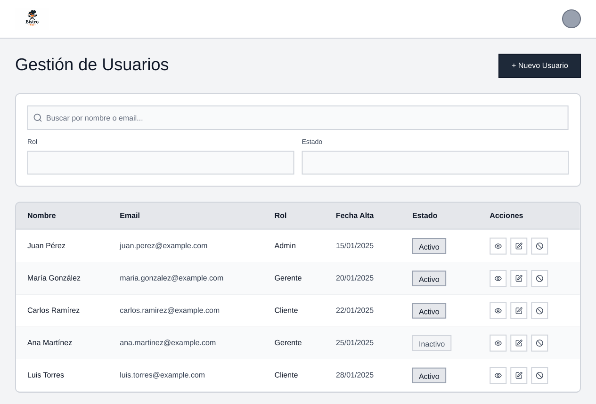
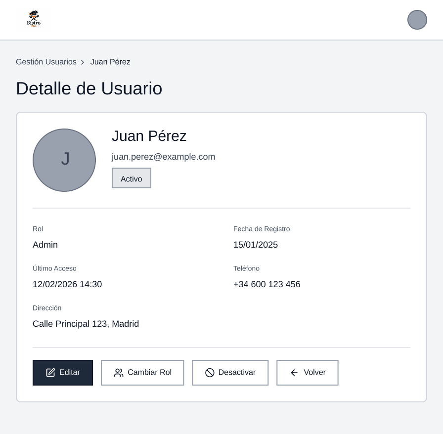
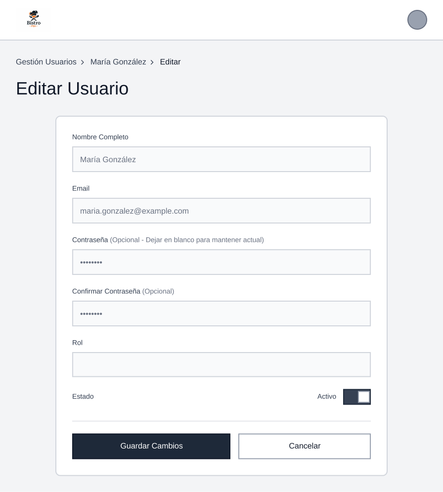

En esta página se muestran los bocetos de las distintas pantallas de la aplicación Bistro FDI, organizados según
las funcionalidades principales del sistema.
Gestión de Usuarios
Listado de Usuarios: muestra una tabla con todos los usuarios registrados, incluyendo nombre,
email, rol, estado y fecha de alta;
incluye buscador, filtros por rol y estado, y botón para crear un nuevo usuario.

Detalle de Usuario: vista individual con la información completa del usuario: datos personales,
rol, estado, fecha de registro y último acceso,
junto con opciones para editar o desactivar.

Crear Usuario: formulario para registrar un nuevo usuario con campos de nombre, email,
contraseña, rol y estado.
Incluye validaciones y botón para confirmar la creación.

Editar Usuario: formulario similar al de creación, pero con los datos ya cargados, permitiendo
modificar información,
cambiar el rol o actualizar el estado.

Desactivar Usuario: panel de confirmación donde se informa que el usuario no podrá iniciar
sesión.
Permite cambiar su estado a inactivo sin eliminar sus datos del sistema.

Gestión de Productos
Listado de Categorías: este boceto presenta el listado de categorías disponibles en el sistema.
El gerente puede consultar, crear, editar o eliminar categorías para organizar los productos del menú de
forma estructurada.

Listado de Productos: este boceto muestra el listado de productos disponibles en la carta del
restaurante.
El gerente puede consultar la información básica de cada producto, como nombre,
categoría, precio final y estado de disponibilidad, así como acceder a opciones para
editar o eliminar productos.

Crear Categoría: Este boceto representa el formulario para la creación de una nueva categoría de
productos, en caso de modificar la categoría sería igual. El gerente puede definir el nombre de la
categoría, añadir una descripción
y asociar una imagen representativa, permitiendo organizar la carta del restaurante de
forma clara y estructurada.

Crear Producto: Este boceto representa el formulario para crear un nuevo producto en la carta, en caso de
modificar el producto sería igual.
El gerente puede introducir el nombre, seleccionar la categoría, indicar el precio base
y configurar la disponibilidad del producto.

Seleccionar Categoría: En este boceto se muestra el desplegable de selección de categoría, que permite
asignar el producto a una categoría existente, como bebidas, entrantes o postres,
facilitando la organización de la carta.

Seleccionar IVA aplicada: Este boceto muestra la selección del tipo de IVA aplicado al producto.
El sistema calcula automáticamente el precio final del producto en función del
precio base y el tipo de impuesto seleccionado.